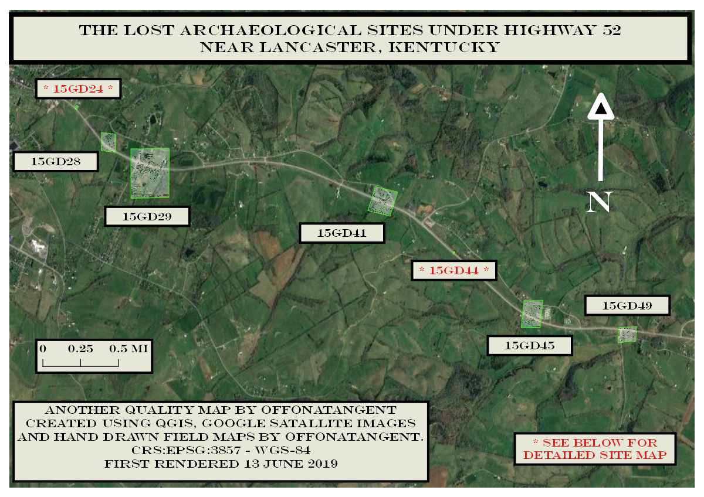
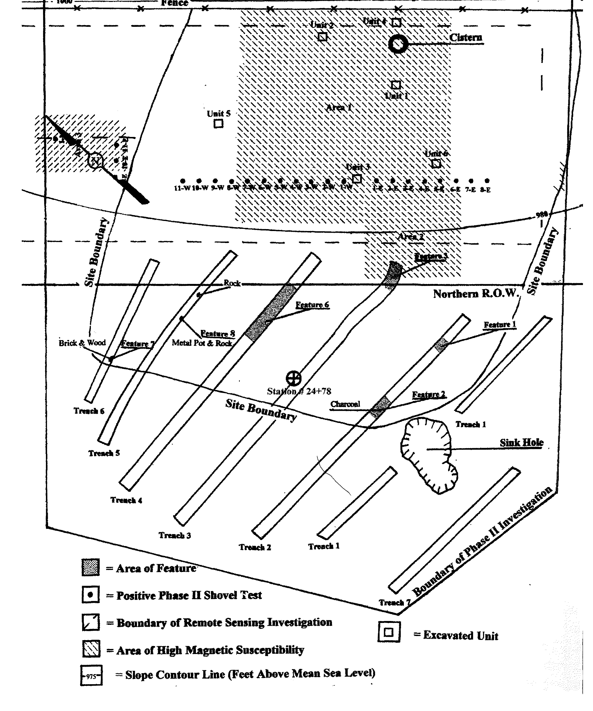
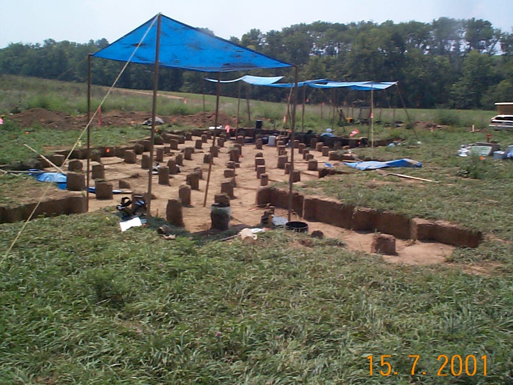
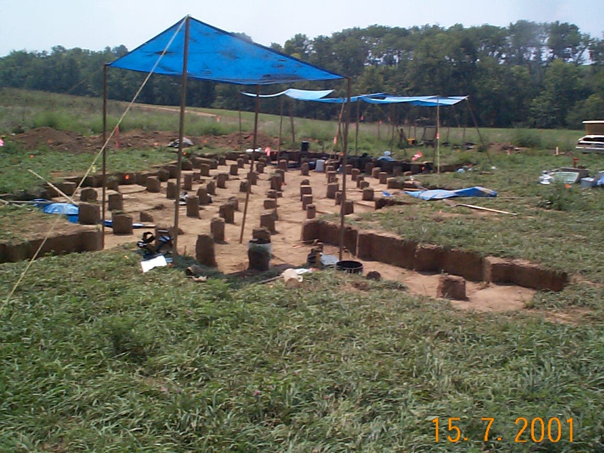

Archaeological Sites Under Kentucky Highway 52
Maps by Offonatangent
Ghosts of the past are all around us, often times right under feet. When roads need to be widened or re-routed to accommodate changing needs, an archaeological survey is done to make sure the history of the area is recorded and documented. One such project was the Highway 52 between Lancaster and Richmond Kentucky. Sites both historic and prehistoric were located and documented so the rich history of the area is not lost. Site 15GD24 was a tollhouse along the dirt road that would become Highway 52. Site 15GD44 was a prehistoric village dating from the height of the Roman times that proved a cultural overlay of Adena Culture farther south than originally thought. Nothing remains of these sites now; the improved Highway 52 has covered them all up. This map shows where these sites were and gives some idea of what they looked like. Zoom into areas of interest to explore the hand drawn field maps of each site.
 Full screen version {kind=link}
{kind=link}
Site of 15GD44 Looking South

Same View from Google Maps 2018
 

{kind=link}
How area appeared during Excavation
Maps by Offonatangent Mapping
Produced on QGIS using Google Satallite Images and Site Maps by Offonatangent